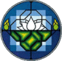
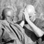
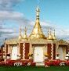
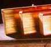
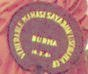

Related LinksValidated on 28th December 2011 |
PO Box 153
Lincoln, MA 01773 USA |
| Download the website as a self-extracting archive Current version: 4th December 2011 (19.3 Mb) The ZIP version of the same archive available from the ATI web site is 31.6 Mb. |
Rt. 1, Box 218-3
High View, WV 26808 USA |
| Forest Monastery and Retreat Centre about 100 miles from Washington DC run by Sri Lankan Mahāthera — Venerable Henepola Gunaratana. Retreats, ordination, publications. |
An extensive Buddhist site created by Australian Bhikkhu Paññavaro. Includes books, talks, graphics, and chanting. |
| Here you can find an excellent selection of PDF books, MP3 chanting, and educational resources. There is an extensive directory of Buddhist centres throughout the world. |
58 Eccleston Square
London SW1V 1PH
Tel: 0207 834 5858 |
 | Well-organised site of the Buddhist
Society in Victoria, with details of classes, publications, tapes, selected articles from the Middle Way Journal, and courses. |
55(A) Kaba-Aye Pagoda Road
Yangon, Myanmar | 
| Meditation Centre in Rangon, Burma, with a branch centre at Hmawbi, about 20 miles outside Rangoon. |
Harewood End
Herefordshire HR2 8JS |
| U Ba Khin Meditation Centre
UK Branch of Sri Goenka’s Centre. (See Vipassanā Research Institute.) |
West Ogwell, Newton Abbot,
Devon TQ12 6EN, United Kingdom |
| Residential insight meditation retreats. Take a ten-day course or a three-month retreat. Link is to the retreat centre, because main link is not available at the time of updating. |
|  | A collection of links on personal reflections on life as a Theravāda Buddhist monk. |
Splatts House, Heddington, Calne,
Wiltshire SN11 0PE |  | U Ba Khin Meditation Centre.
Founded in 1978 to promote the practice of Buddhist Vipassana meditation as taught by the late Sayagyi U Ba Khin. |
The Sun, Garaway Hill
Hertfordshire HR2 8EZ
Tel/Fax: 01981 580 436 | | Sell books,
tapes, and videos of teachings in the U Ba Khin tradition. “The Manuals of Buddhism” by Venerable Ledi Sayādaw is excellent. |
Mahasi Meditation Centre
Rangoon, Burma
Website recently updated |
| Mahāsi Organisation website. Treatises are in PDF format. MP3 discourses are poor sound quality. FAQ explains about practising meditation in Burma. Profile is pictures of the Rangoon centre. |
|
| Extensive site for Theravāda Buddhism. Host for Burmese Vihāras in the UK, USA, and Burma, and links to other Buddhist sites. Many articles and books by Burmese Sayādaws, and photos of pagodas and other religious subjects. |
Pali Text Society
73 Lime Walk
Headington Oxford OX3 7AD |  | This online search facility is provided by the US Department of Education. You can use it to look up any Pali Word. For a hard copy, vist the PTS website. |
Dictionary of Pali Proper Names |
| The Dictionary of Pali Proper Names edited by G.P. Malalasekera is a valuable reference for students of Buddhism. It lists people, place names, discourses, etc., and gives many cross references to the
texts and commentaries. |
330 Acoma St. # 311
Denver, Colorado 80223 |
| Vipassanā (insight meditation) cultivates
mindfulness of our moment-to-moment experience. In seeing the body and mind clearly, we become free of suffering. |
Dhamma Giri
Igatpuri-422 403, India |
| Chattha Sangāyana Pāli Tipitaka
U Ba Khin Vipassanā retreats
Public Domain Pāli Fonts.
Vipassanā Newsletter. |
25 Stanley Road Ilford
Essex IG1 1RW
Tel: 0208 553 5020 Fax: 553 5122 |
| Publish a wide range of
Buddhist books, including modern translations of Digha Nikāya, Majjhima Nikāya, Samyutta Nikāya, and the Sutta Nipāta. |
|  | Website run by a Chinese Buddhist who practised in Mahāsi Yeikthā. A good source for Mahāsi Sayādaw’s
books. |